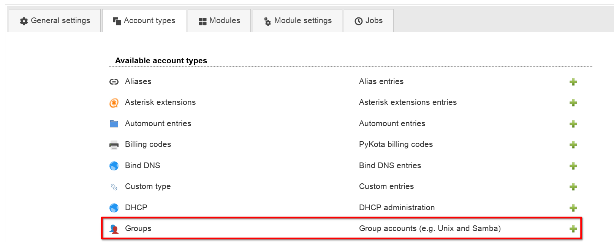
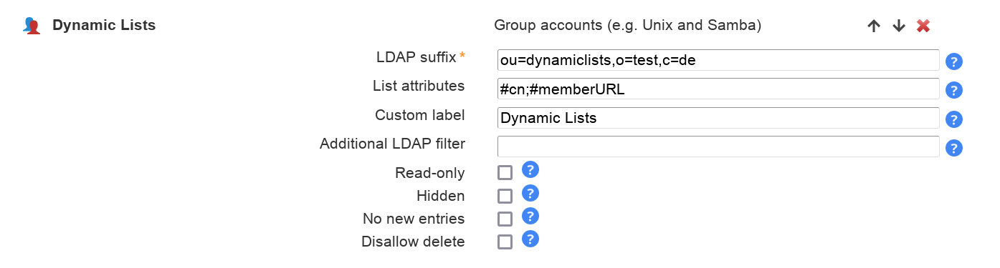
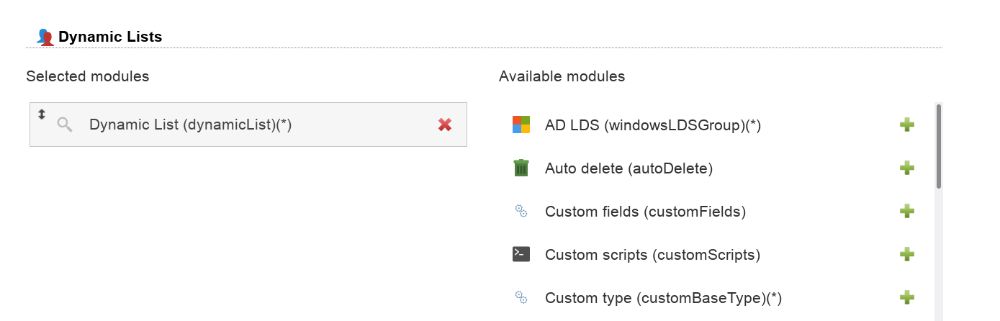
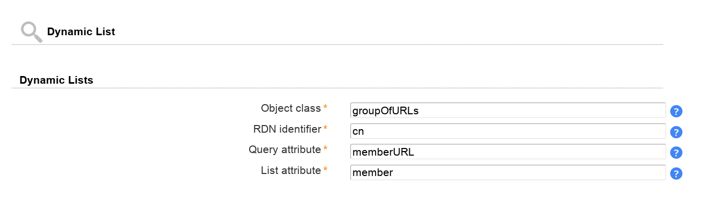
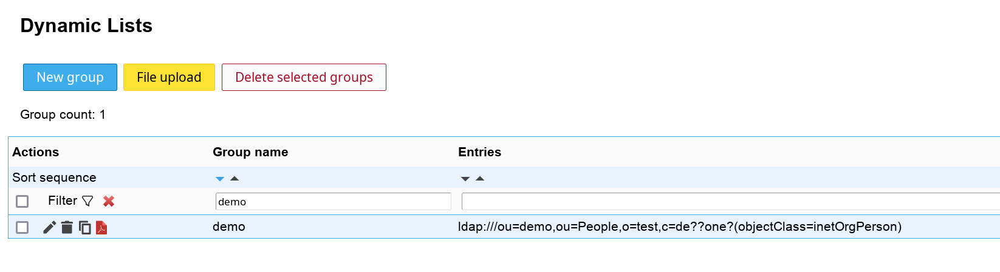
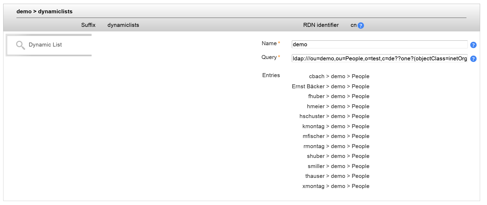

This module is used to manage Unix group entries. This is the default module to manage Unix groups and uses the nis.schema. Suse users who use the rfc2307bis.schema need to use LAM Pro.
Configuration
Special Please add the account type "Groups" and then select account module "Unix (posixGroup)".
Virtual list attributes:
The following virtual attributes can be shown in the group list. These are no real LDAP attributes but extra data that can be shown by LAM.
memberuid_count: number of entries in attribute "memberuid"
member_count: number of entries in attribute "member"
uniqueMember_count: number of entries in attribute "uniquemember"
owner_count: number of entries in attribute "owner"
roleOccupant_count: number of entries in attribute "roleOccupant"
Module settings:
GID generator: LAM will suggest GID numbers for your accounts. Please note that it may happen that there are duplicate IDs assigned if users create groups at the same time. Use an overlay like "Attribute Uniqueness" (example) if you have lots of LAM admins creating groups.
Fixed range: LAM searches for free numbers within the given limits. LAM always tries to use a free GID that is greater than the existing GIDs to prevent collisions with deleted groups.
Samba ID pool: This uses a special LDAP entry that includes attributes that store a counter for the last used UID/GID. Please note that this requires that you install the Samba schema and create an LDAP entry of object class "sambaUnixIdPool".
Magic number: Use this if your LDAP server assigns the GID numbers automatically (e.g. DNA by 389 server). Enter the server's magic number setting.
Disable membership management: Disables group membership management. This is useful if memberships are e.g. managed via group of names.
Group management:
Group membership management:
Some applications (e.g. Suse Linux) use the rfc2307bis schema for Unix accounts instead of the nis schema. In this case group accounts are based on the object class groupOf(Unique)Names or namedObject. The object class posixGroup is auxiliary in this case.
LAM Pro supports these groups with a special account module: rfc2307bisPosixGroup
Use this module only if your system depends on the rfc2307bis schema. The module can be selected in the LAM configuration. Instead of using groupOfNames as basis for your groups you may also use namedObject.
Module activation:
GID generator: LAM will suggest GID numbers for your accounts. Please note that it may happen that there are duplicate IDs assigned if users create groups at the same time. Use an overlay like "Attribute Uniqueness" (example) if you have lots of LAM admins creating groups.
Fixed range: LAM searches for free numbers within the given limits. LAM always tries to use a free GID that is greater than the existing GIDs to prevent collisions with deleted groups.
Samba ID pool: This uses a special LDAP entry that includes attributes that store a counter for the last used UID/GID. Please note that this requires that you install the Samba schema and create an LDAP entry of object class "sambaUnixIdPool".
Magic number: Use this if your LDAP server assigns the GID numbers automatically (e.g. DNA by 389 server). Enter the server's magic number setting.
Disable membership management: Disables group membership management. This is useful if memberships are e.g. managed via group of names.
Force sync with group of names: This will automatically set the group memberships of the Unix part to the same members as set on group of names tab.
The GID number will be filled automatically based on the server profile configuration.
Group members can be edited and also synced with Group of (unique) names.
LAM supports managing Samba 3 groups. You can set special group types and also create Windows predefined groups like "Domain admins".
Module activation:
Group editing:
LAM can manage your Windows groups. Please enable the account type "Groups" in your LAM server profile and then add the group module "Windows (windowsGroup)(*)".
The default list attributes are for Unix and not suitable for Windows (blank lines in account table). Please use "#cn;#member;#description" or select your own attributes to display in the account list.
NIS support is deactivated by default. Enable it if needed on tab "Module settings".
Now you can edit your groups inside LAM. You can manage the group name, description and its type. Of course, you can also set the group members.
Group scopes:
Global: Use this for groups with frequent changes. Global groups are not replicated to other domains.
Universal: Groups with universal scope are used to consolidate groups that span domains. They are globally replicated.
Domain local: Groups with domain local scope can be used to set permissions inside one domain. They are not replicated to other domains.
Group type:
Security: Use this group type to control permissions.
Distribution: These groups are only used for email applications. They cannot be used to control permissions.
With "Show effective members" you can show a list of all members of this group including members of subgroups and their subgroups.
LAM can manage your AD LDS groups. Please enable the account type "Groups" in your LAM server profile and then add the group module "AD LDS (windowsLDSGroup)(*)".
The default list attributes are for Unix and not suitable for AD LDS (blank lines in account table). Please use "#cn;#member;#description" or select your own attributes to display in the account list.
Now you can edit your groups inside LAM. You can manage the group name, description and its type. Of course, you can also set the group members.
With "Show effective members" you can show a list of all members of this group including members of subgroups and their subgroups.
Please activate the Kolab group module in your LAM server profile to activate Kolab support.
You can specify the email address and also set allowed sender and recipient addresses.
LAM supports to manage mail routing for group accounts.
Module activation:
This feature can be activated by adding the "Mail routing" module to the group account type in your server profile.
Usage:
You can specify a routing address, the mail server and a number of local addresses to route.
In case you want to add this extension by default for new groups there is an option in profile editor.

You can manage file system quotas with LAM. This requires to setup lamdaemon. File system quotas are not stored inside LAM but managed directly on the specified servers.
Dynamic lists allow you to create LDAP entries that populate the value of an attribute via LDAP query. This is e.g. used to create groups that contain all users in a certain DN.
Please note that this functionality requires configuration on your LDAP server. E.g. on OpenLDAP you need to activate the "dynlist" overlay and need to specify attribute mappings.
Configuration
Add a new group account type and set a unique label for it.

Do not forget to set proper "List attributes" to be shown on the overview page of all dynamic lists.

On tab "Modules" please add the dynamic lists module.

On tab "Module settings" you can now configure your dynamic lists. Here you setup the used object class, RDN attribute, query attribute and list attribute (the one that is populated via query).
In case you have different types of dynamic lists you can simply redo the steps above to create more group types.

Usage
When you login to LAM you will see your new dynamic lists tab.

For each list you can manage the name and query string. LAM also displays which entries are auto-populated to the list.

There are two LAM group modules depending if your group entries should be built on object class "pykotaObject" or a different structural object class (e.g. "posixGroup"). For "pykotaObject" please select "PyKota (pykotaGroupStructural(*))" and "PyKota (pykotaGroup)" in all other cases.
Now you can add the PyKota extension to your groups.
You can specify a list of valid host names where the group's members may login. If you add the value "*" then the users may login to any host. This can be further restricted by adding explicit deny entries which are prefixed with "!" (e.g. "!hr_server").
Please note that your PAM settings need to support host restrictions. This feature is enabled by setting pam_check_host_attr yes in your /etc/pam_ldap.conf. When it is enabled then the account facility of pam_ldap will perform the checks and return an error when no proper host attribute is present. Please note that users without host attribute cannot login to such a configured server.